Vistas y gráficos
Este capítulo describe las vistas del modelo, cómo se dibuja cada una y cómo cambiar qué muestra una vista y de qué manera: estilos gráficos, escala y detalle, las alturas de corte de una planta, las regiones de recorte, ocultar y aislar, Visibilidad y gráficos, los filtros y las plantillas de vista. Los grosores de línea, los patrones de línea y los estilos por categoría se describen en los mismos términos que los cuadros de diálogo de Configuración en la barra lateral.
Vistas 3D
Vistas ▸ Crear ▸ Vista 3D ▸ Vista 3D por defecto abre la vista 3D por defecto, {3D}, que encuadra todo el modelo; si se abre de nuevo, muestra el modelo tal como se dejó. Arrastra para orbitar (o Shift y el botón central), arrastra con el botón central para desplazar y gira la rueda para hacer zoom en el cursor; consulta La interfaz.
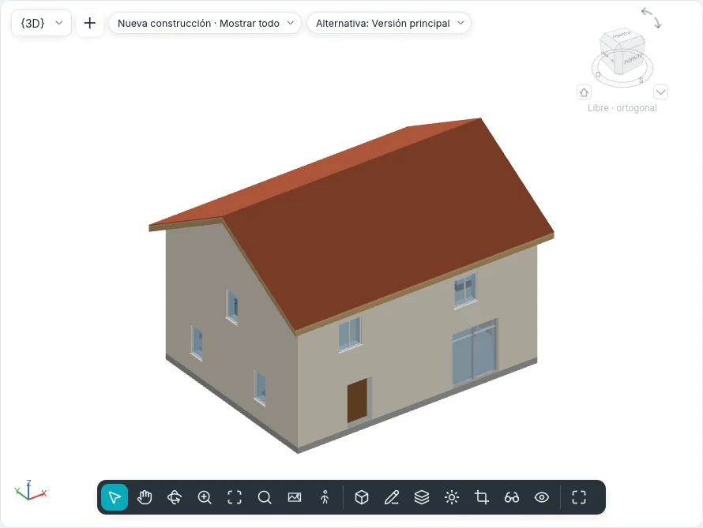
Para conservar un encuadre, Vistas ▸ Crear ▸ Vista 3D ▸ Guardar vista: escribe un nombre y pulsa Enter. La nueva vista aparece en Vistas 3D del Índice del proyecto y se abre de inmediato; conserva el encuadre con el que se deja. Cambiar el nombre de {3D} en el Índice del proyecto (clic derecho ▸ Cambiar nombre…) hace lo mismo: {3D} pasa a ser una vista con nombre y la siguiente vista 3D por defecto es una nueva {3D}.
Un elemento seleccionado se baña de azul y queda semitransparente, con sus aristas en azul: lo que hay detrás sigue visible.
Los suelos cortan los muros que atraviesan: donde una losa cruza un muro, el muro se detiene bajo ella y continúa por encima, de modo que el borde de la losa y la cara del muro forman una sola superficie.
Caja de sección, proyección y orientación
{3D} nace ortogonal, mirando desde la esquina sureste. Clic derecho en el cubo de orientación: Prospettica u Ortogonale, Vai all'inizio, Salva vista…, Blocca selezione (la órbita gira alrededor de los elementos elegidos), Ripristina Fronte, Orienta su direzione (los puntos cardinales y Alto), Orienta su vista (una planta, sección o alzado: la vista toma su punto de vista y una caja de sección reproduce sus extensiones) y Orienta su piano… (un nivel, una rejilla o un plano de referencia).
En las Propiedades de la vista 3D, Estensioni ▸ Riquadro di sezione activa la caja de sección: la primera vez envuelve el modelo visible. Fuera de la caja el modelo no se ve y las partes cortadas se cierran en sus caras, capa por capa. Un clic en una arista la selecciona: las seis flechas mueven una cara, el círculo superior la gira. Cada cambio es un paso de deshacer; desactivada, la caja conserva su tamaño. En el navegador de proyectos, clic derecho en una vista 3D ▸ Mostra riquadro di sezione la muestra también en plantas y secciones, con pinzamientos. Visibilità e grafica ▸ Riquadri di sezione oculta su dibujo, no el corte.
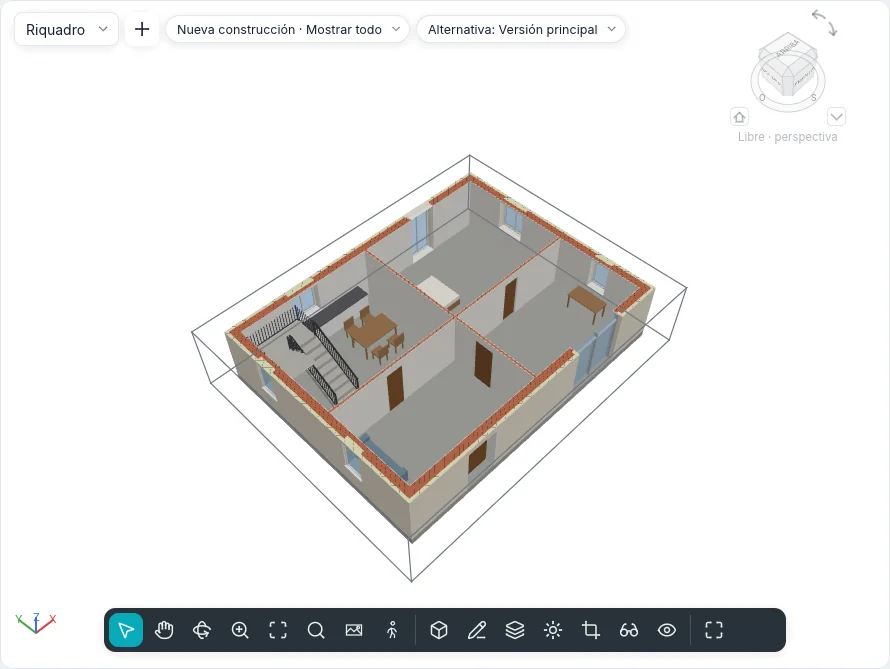
Con Sezione la barra de opciones ofrece Tipo (Sezione edificio, Sezione di muro, Dettaglio) y Scala vista; el navegador lista la vista bajo la rama de su tipo. Prospetto se coloca con un clic junto a un muro: el símbolo lo mira (Tab lo gira). Clic derecho en Viste ▸ Organizzazione del browser… elige cómo listar las vistas: por tipo, disciplina, fase, nivel, solo las que no están en planos, o una organización propia.
Las caras cortadas muestran el patrón de corte del material; con detalle Basso muestran el
Materiale poché a dettaglio basso elegido en Propiedades (
Sezione se dibuja también en una sección, un alzado o un detalle: nace perpendicular a la vista. Rif. ad altra vista hace que la sección abra una vista existente (o una nueva vista 2D libre) en lugar de la suya; Offset desplaza la línea. Seleccionado un alzado colocado con un clic, su símbolo muestra cuatro casillas: un clic activa o desactiva el alzado hacia ese lado (alzados interiores), el pinzamiento exterior gira el símbolo. En el navegador, Ctrl y Mayús eligen varias vistas: Applica modello vista…, Duplica y Elimina valen para todas.
Vistas en perspectiva
Vistas ▸ Crear ▸ Vista 3D ▸ Vista en perspectiva coloca una cámara en una planta, una sección o un alzado. La barra de opciones (en el estilo BIMopen, el panel de herramientas) tiene el Nivel y el Desfase, la altura de los ojos sobre el nivel (1,60 m, como en el recorrido); Perspectiva siempre está activada. El primer clic es donde está la cámara; el triángulo de lo que ve sigue al cursor, y el segundo clic es el punto que mira, a la misma altura. Se crea Vista 3D 1 (luego 2, 3…) en Vistas 3D del Índice del proyecto, que se abre junto a la planta, recortada. En una sección o un alzado los dos clics dan también las alturas.
La vista se dibuja en su región de recorte, en sus proporciones (240 × 160 mm en papel); lo que queda más allá del plano de recorte lejano (al principio, a la distancia del punto mirado) no se dibuja. Sus propiedades, en los grupos Extensión y Cámara: Recortar vista, Región de recorte visible, Plano de recorte lejano y su distancia, Nivel de referencia, Altura del punto de vista y Altura del objetivo (desde el nivel), Campo de visión.
Clic derecho en la vista en el Índice del proyecto ▸ Mostrar cámara selecciona la cámara en las plantas, secciones y alzados (también un clic en el borde de la región de recorte en la vista 3D). Arrastre su cuerpo para moverla (con Mayús el objetivo se queda), el punto rojo para girarla, los vértices del triángulo para el campo de visión y el cuadrado en su base para el plano lejano; en un alzado o una sección cambia las alturas. La vista 3D sigue mientras arrastra, y cada arrastre se deshace con Ctrl+Z. En la ficha Modificar | Cámaras: Restablecer objetivo pone el objetivo sobre el modelo que se ve en el centro de la región de recorte, Tamaño de recorte cambia el ancho y el alto en papel por Campo de visión (se ve más) o a Escala (proporciones bloqueadas), Restablecer recorte (240 × 160 mm, 50°), Abrir la vista. Los lados de la región de recorte, arrastrados en la vista 3D, también cambian el campo de visión.
La vista en vivo de una vista de cámara la sigue, el recorrido empieza en su punto de vista y, al
salir, la cámara se queda donde se ha llegado; un Nuevo recorrido empieza en su posición. En la
línea de comandos: camera {"from":[14,-6],"to":[5,3]} crea la vista,
camera {"eye":[15,-6,1.6],"fov":60,"far":20} la cambia, camera {"reset_target":true}
restablece el objetivo.
Estilos visuales
El botón Estilo gráfico de la barra de controles de vista, en la parte inferior de cada ventana de vista, ofrece:
| Estilo | Qué se dibuja |
|---|---|
| Estructura alámbrica | Todas las aristas, también las que quedan detrás de otras caras; sin caras |
| Líneas | Las caras como papel y las aristas que quedan delante en tinta; sobre el fondo oscuro papel y líneas se invierten juntos |
| Sombreado | Las caras iluminadas, en el color de su material |
| Sombreado con aristas | Como Sombreado, con las aristas delante |
| Colores planos | Las caras en el color de su material, igual con cualquier luz |
| Realista | Las caras como en una fotografía: la luz del sol y del cielo del proyecto, los reflejos, las sombras ambientales, el vidrio transparente, la bruma |
| Pastel | Una acuarela: caras con aguada en el color de su material, cerca del papel al sol, más profundas en sombra; las líneas dibujadas a mano |

El estilo pertenece a la vista y se puede deshacer. Los atajos de teclado WF, HL y SD
eligen Estructura alámbrica, Líneas y Sombreado.
Las aristas son las reales: donde dos caras se encuentran en ángulo, y el contorno de cada cara y de cada hueco. Un muro con una ventana muestra su propio contorno y el de la ventana, y ninguna línea donde se unen las piezas del muro.
Las plantas, las secciones y los alzados también tienen estilo gráfico. Una planta se dibuja en Líneas hasta que se elige otro estilo. En Líneas las superficies, cortadas o vistas, no se colorean: lo cortado muestra el patrón de corte de su material; con el nivel de detalle Bajo el patrón de relleno de escala baja del tipo, o si no solo su contorno. En Sombreado, Sombreado con aristas y Colores planos cada elemento visto o cortado se rellena con el color de sombreado de su material (una parte sin material toma el de su categoría, de Estilos por categoría, si no el color predeterminado de la categoría; la vista 3D sigue la misma regla): muros (cada capa donde está cortada), suelos, cubiertas, puertas, ventanas, mobiliario y componentes, escaleras y barandillas. Las plantas son planas; en secciones y alzados Sombreado oscurece un poco las caras giradas respecto a quien mira, como los faldones de una cubierta, mientras que Colores planos las deja todas iguales. Con los niveles de detalle Medio y Alto los patrones de corte quedan encima del color. Los planos, las impresiones y los dibujos exportados muestran las vistas como la pantalla.
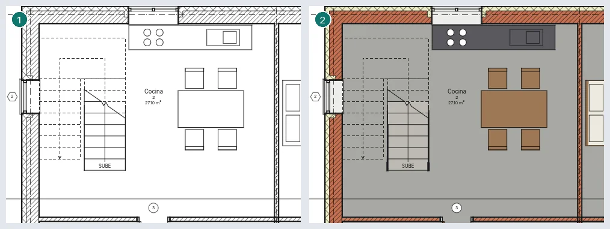
El esquema de color de las habitaciones se ve en todos los estilos. Con Ubicación de la combinación de colores en Fondo queda bajo las líneas del modelo: en planta encima de los suelos y debajo del mobiliario, en sección encima de las superficies vistas a través de cada habitación cortada. En Primer plano cubre el modelo, debajo de las anotaciones.
Estilo Realista
Realista dibuja la vista 3D como una fotografía, en tiempo real, y la vista sigue siendo editable como en los demás estilos.
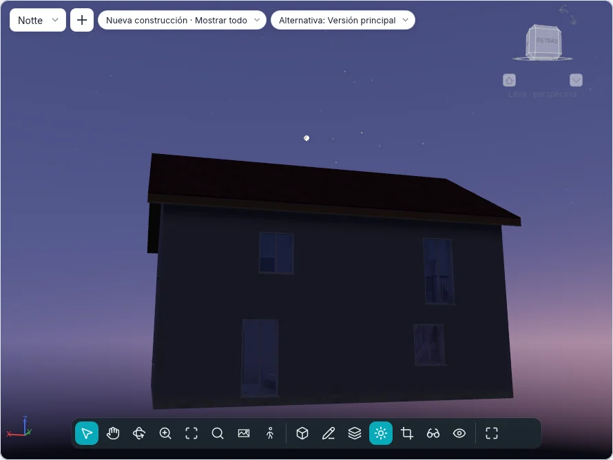
- Luz del sol y del cielo. La luz es la del sol del proyecto (lugar, fecha y hora de la Configuración del sol) y del cielo que ese sol da: azul de día, más cálido y oscuro al atardecer. El sol ilumina incluso con las sombras apagadas; con Proyectar sombras sus sombras son las de los demás estilos. Lo que queda en sombra sigue iluminado por el cielo y el suelo. El disco del sol aparece cuando entra en el encuadre, con un halo, y el modelo lo oculta. Hacia el atardecer la luz del sol se vuelve cálida y más débil y las sombras se alargan; tras la puesta solo queda el cielo, que se apaga en un crepúsculo azul violáceo con una franja rosada sobre el horizonte del lado del sol; de noche el cielo es azul oscuro y la escena casi a oscuras (las superficies autoiluminadas siguen visibles). Al arrastrar el sol o seguir un estudio solar la luz cambia de forma continua.
- Luna y estrellas. La luna está donde se encuentra en el lugar, la fecha y la hora del proyecto, en su fase: iluminada por el lado que mira al sol, el resto apenas gris (luz cenicienta), más roja cerca del horizonte. De noche es ella la luz: con Proyectar sombras el modelo arroja las sombras de la luna; la luna llena ilumina la escena suavemente y la luna nueva la deja casi a oscuras. Puesto el sol aparecen las estrellas más brillantes en su sitio, tantas más cuanto más oscuro está el cielo.
- Materiales. Las superficies toman el aspecto de su material (pestaña Aspecto de Materiales): la imagen de textura a su tamaño real, la rugosidad y su mapa, el relieve, el metal, el vidrio y el agua, la autoiluminación (se ve, no ilumina lo demás). Un material sin aspecto propio lo deriva de su color y su transparencia; una parte sin material toma el color de su categoría. En la web las imágenes llegan después: mientras tanto se ve el color. La vista previa de la pestaña Aspecto muestra el material sobre una esfera, un cubo o un muro de 2 × 2 m.
- Vidrio. El vidrio deja ver lo que hay detrás y refleja el cielo y el sol, más cuando se mira de refilón. Los vidrios se dibujan del más lejano al más cercano.
- Sombras ambientales. Con Mostrar sombras ambientales los rincones y huecos, que reciben menos luz del cielo, son más oscuros.
- Bruma. A lo lejos el aire vela el modelo: Bruma en la distancia regula cuánto y cuán limpio está el cielo.
- Exposición. Automático sigue la luz de la escena y se adapta en medio segundo más o menos cuando cambia (la cámara del cielo a la sombra, otra hora). Manual usa el Valor (EV): más alto es más oscuro, unos 15 bajo el sol del mediodía.
En el grupo Realista de las Opciones de visualización gráfica: Exposición y Valor (EV), Punto blanco (la luz mostrada blanca: 6500 K es la luz del día tal cual, un valor más bajo enfría la imagen, uno más alto la calienta), Saturación, Altas luces y Sombras (bajan o suben los tonos más claros y más oscuros) y Bruma en la distancia. Mostrar aristas dibuja las aristas sobre las caras. El Esquema de iluminación es por ahora siempre Exterior: sol. Sol, Luz ambiental e Intensidad de las sombras regulan la luz del sol, la del cielo y lo oscuras que son las sombras del sol.
El Fondo Cielo físico (hora y lugar) muestra detrás del modelo el mismo cielo que lo ilumina, con el disco del sol; con Ninguno, Cielo o Degradado el fondo queda como se eligió y el cielo ilumina igualmente el modelo. Al pasar a Realista, una vista con el fondo Ninguno toma Cielo físico (hora y lugar), y vuelve a Ninguno al pasar a otro estilo. Los elementos seleccionados y la trayectoria del sol se ven como en los demás estilos.
En la web sin WebGPU (con WebGL2) Realista funciona sin sombras ambientales y la exposición automática se ajusta según el cielo en lugar de la imagen. En la web y en Android, mientras la cámara se mueve, la vista puede dibujarse más pequeña para seguir fluida, y vuelve a ser nítida al detenerse. Sin tarjeta gráfica Realista se muestra como Sombreado y la barra de estado lo indica. Las plantas, secciones y alzados en Realista se dibujan por ahora como en Sombreado; los planos, impresiones e imágenes exportadas aún no muestran el Realista.
Estilo Pastel
El estilo Pastel dibuja la vista como una acuarela o un dibujo a rotulador: cada cara es una aguada uniforme del color de su material, suavemente matizada, nunca a rayas. Las caras al sol quedan cerca del papel; las que se apartan del sol toman el mismo color, más profundo y más frío, nunca gris; donde cae una sombra arrojada la aguada se hace aún más profunda, con un borde nítido. El vidrio es una aguada gris azulada con un reflejo cálido. La aguada se desvanece hacia los bordes del dibujo, de modo que el papel se ve alrededor del modelo; el papel tiene un grano apenas visible. Al elegir Pastel se activan las líneas de boceto, a tinta; se pueden desactivar, y se apagan al pasar a otro estilo.
Vale en todas las vistas. En las vistas 3D la luz es la de Realista: el sol del proyecto y sus sombras. En plantas, secciones y alzados el papel es crema, las caras y los suelos se aguadan en los colores de sus materiales y las partes cortadas son un poché lleno y oscuro, en el tono de su material. Las sombras arrojadas son las de la vista: se encienden, se apagan y se hacen más o menos oscuras con los mismos ajustes que en los demás estilos (Intensidad de las sombras), en un tono cálido y oscuro bien legible. La impresión y la exportación salen con aguada como en pantalla, también las vistas 3D.
Pastel es el mismo sea cual sea el fondo de la ventana: siempre su papel claro, con las mismas aguadas, el mismo poché y las mismas sombras.
El grupo Pastel de las Opciones de visualización gráfica vale por
vista y las plantillas de vista lo llevan consigo: Intensidad de la aguada (cuán profundo es el
color aplicado), Variación de la aguada (cuánto varía sobre una cara), Grano del papel y
Saturación (cuánto conserva la aguada del color de los materiales), de 0 a 100, y el Color del
papel (con Elegido un color propio; sin él, el papel blanco cálido). Desde la línea
de comandos: graphicoptions {"style":"Pastello","pastel_density":70,"paper_color":"auto"}.
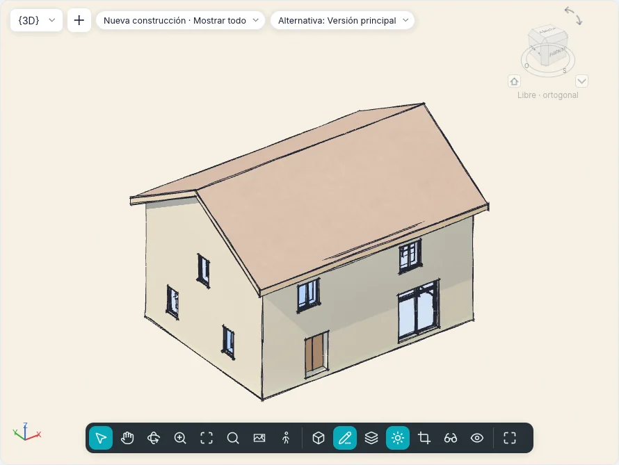
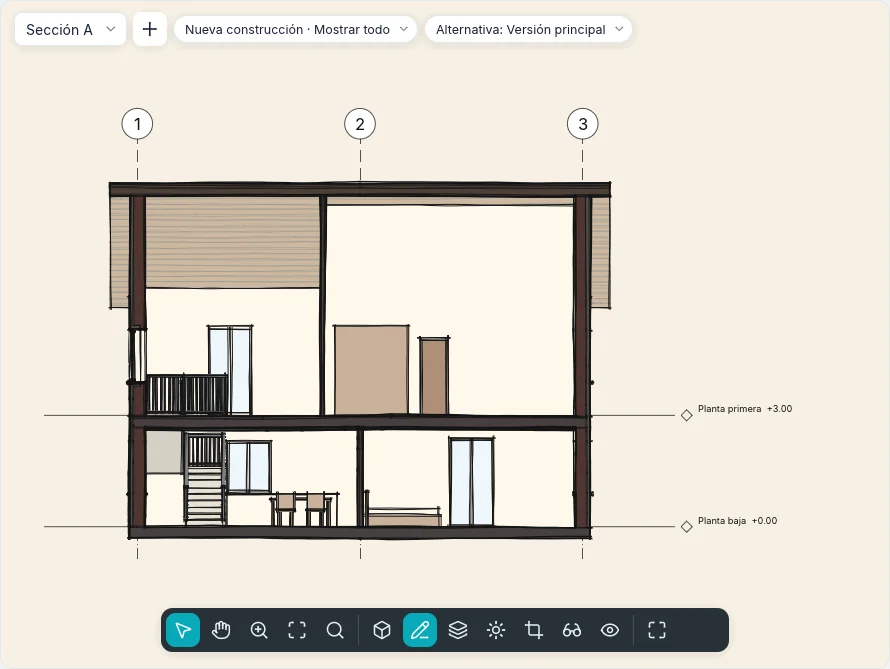
Vista en vivo y recorrido
Vista en vivo (ficha Vistas ▸ Presentación, o el botón de la barra flotante de la vista 3D)
abre junto a la vista 3D una ventana que la dibuja en el estilo Realista, con las sombras del
sol y el cielo físico, y sigue su cámara: se gira o se acerca la vista 3D y la vista en vivo mira
desde el mismo punto; cada cambio en el modelo aparece enseguida. Mientras la cámara se mueve la
vista en vivo dibuja un borrador y luego lo refina. Abajo en la vista en vivo, Hora fija la
hora del sol propio de la vista (el amanecer y el atardecer están marcados en el deslizador);
Sol del proyecto vuelve al sol común del proyecto. Las propiedades de la vista tienen el grupo
Vista en vivo: Sigue la vista 3D y Borrador en movimiento. Desde la línea de comandos:
liveview 3d {"follows":true,"draft":true}.
Recorrer (ficha Vista ▸ Presentación, la barra flotante de la vista 3D, la barra de navegación del estilo Clásico o la búsqueda de comandos) es un comando como los demás: se abre la ficha contextual Modificar | Recorrer, la barra de opciones muestra sus opciones y la barra de estado dice qué hacer. La vista 3D activa se convierte en los ojos de quien camina por el modelo: uno se encuentra en el suelo bajo el centro de la vista, mirando hacia donde miraba la vista. El puntero se captura con el primer clic en la vista (hasta entonces se pueden usar la ficha y la barra de opciones):
| Tecla | |
|---|---|
| W A S D o las flechas | caminar |
| el ratón | mirar alrededor |
| Mayús | correr |
| coma y punto, o la rueda | más lento y más rápido |
| F | Caminar o Volar |
| E y Q, Re Pág y Av Pág | subir y bajar (en vuelo) |
| K | un fotograma clave |
| R | iniciar y detener la grabación |
| Esc | salir del recorrido |
Los demás atajos esperan hasta que se sale. Caminando, la gravedad mantiene sobre suelos, rellanos y forjados; un escalón un poco más alto que la contrahuella más alta del proyecto se sube sin notarlo, así escaleras y rampas se suben caminando; muros, pilares, barandillas, muebles y vidrios de ventanas detienen, y uno se desliza a lo largo de ellos; las puertas se atraviesan. Volar quita gravedad y colisiones. Se sale con Esc, Modificar, Salir en la ficha o eligiendo otro comando; la vista queda donde se ha llegado. Una planta del nivel en el que uno está muestra dónde está y qué ve.
La ficha Modificar | Recorrer tiene Modo (Caminar, Volar), Itinerario (Fotograma clave, Grabar) y Recorrer (Opciones…, Salir); en el estilo BIMopen están en la ficha del panel de herramientas. La barra de opciones tiene Caminar o Volar, la altura de los ojos, la velocidad, Itinerario (adónde van los fotogramas clave y la grabación: Nuevo o uno de los itinerarios del proyecto), Mover en paralelo al terreno, Sensibilidad del giro e Inercia (la mirada arranca y se detiene con suavidad; 0 % como antes). Mientras se recorre, la paleta de propiedades muestra la velocidad al paso, la carrera, la velocidad de vuelo, la altura de los ojos, gravedad y colisiones, el escalón superable, la sensibilidad y la inercia, Invertir eje vertical, Grabar en, Fotograma clave cada y la suavidad del itinerario grabado. En una pantalla táctil un joystick hace caminar, un arrastre sobre la vista hace mirar, y los botones hacen correr, volar, subir y bajar, poner fotogramas clave, grabar y salir.
Opciones… abre los ajustes Modo recorrido. Movimiento reúne las opciones personales,
las mismas en cada proyecto: altura de los ojos (1,60 m), velocidad al paso, carrera, velocidad de
vuelo, Sensibilidad del giro, Inercia del giro, Fotograma clave cada, Invertir eje
vertical, campo de visión y Vuelo paralelo al terreno. Colisiones por categoría reúne
las del proyecto: para cada grupo de categorías si Desactivar colisión está activo (lo está
para las puertas y los paneles de puerta de los muros cortina), y el Escalón superable, tomado
de las escaleras si no se escribe. Desde la línea de comandos: walksettings {"step":0.22},
collision {"group":"furniture","off":true}.
Desactivar colisión
Cada elemento con un cuerpo tiene Desactivar colisión en el grupo Modo recorrido de sus
propiedades: activo, quien recorre el modelo lo atraviesa. El valor viene del tipo, y el del tipo
de su categoría; Colisión del tipo (en un tipo, Colisión de la categoría) lo indica, y al
fijar Desactivar colisión el valor pasa a ser del elemento. Varios elementos seleccionados
muestran ‹valores distintos› donde difieren. Las tablas de planificación lo listan como campo
y los filtros lo usan como regla. No cambia nada fuera del recorrido. Un suelo, una escalera o una
rampa con la colisión desactivada tampoco sostienen a nadie. Desde la línea de comandos:
collision 42 {"off":true}, o {"off":null} para recuperar el valor del tipo.
Itinerario
Itinerario (ficha Vista ▸ Vista 3D ▾, o la búsqueda de comandos) se dibuja en una planta, una sección o un alzado como un muro: la barra de opciones tiene Perspectiva, el Nivel y el Desfase (1,60 m, los ojos del recorrido); cada clic pone un fotograma clave y el tramo siguiente sigue al cursor, con el triángulo de la cámara al inicio. En una sección o un alzado los clics dan también la altura. Un doble clic, Esc o Terminar itinerario en la ficha cierran el trayecto (Cancelar itinerario lo abandona): nace Itinerario 1, en la rama Itinerarios del navegador de proyectos, y se abre al lado, en el fotograma 1. Es una vista de cámara que se mueve: tiene su región de recorte, su plano lejano y las propiedades de la cámara, además de Fotogramas del itinerario y Fotograma.
Seleccionado en planta (un clic en el trayecto, o Mostrar cámara en el navegador), el itinerario se modifica en la ficha Modificar itinerario. Controles en la barra de opciones elige qué hacen los pinzamientos:
- Cámara activa: la cámara se arrastra a lo largo del trayecto, con forzado a los fotogramas clave; en un fotograma clave el punto rojo dice adónde mira y se arrastra, y las esquinas del triángulo cambian el campo de visión;
- Camino: los fotogramas clave se convierten en pinzamientos; en una sección o un alzado se cambia su altura;
- Añadir fotograma clave: un clic en el trayecto añade uno;
- Eliminar fotograma clave: un clic en uno lo quita (quedan al menos dos).
Fotograma muestra el fotograma de la vista y se escribe; al lado los botones fotograma clave anterior, fotograma anterior, fotograma siguiente, fotograma clave siguiente y Reproducir, que reproduce el itinerario en su vista desde el fotograma mostrado hasta el último; la barra de estado dice «fotograma 87 de 300», con Cancelar; Esc detiene. Restablecer cámaras hace que cada fotograma clave vuelva a mirar a lo largo del trayecto.
Fotogramas… abre Fotogramas del itinerario: Fotogramas totales (300), Fotogramas por segundo (15), Tiempo total (20 s), Velocidad uniforme (activa: la cámara va siempre a la misma velocidad; desactivada, cada fotograma clave tiene su Aceleración, de 0,1 a 10, para el tramo que parte de allí), y para cada fotograma clave el fotograma, la velocidad y el tiempo transcurrido. Suavidad del giro dice cómo gira la mirada en los cambios de dirección: 0 % de golpe en el fotograma clave, 100 % a lo largo de la mitad del tramo anterior y la mitad del siguiente, arrancando y deteniéndose con suavidad; el itinerario tiene una y cada fotograma clave puede tener la propia. El gráfico de abajo muestra el giro de la mirada en el tiempo. Indicadores con Incremento de fotogramas marca los fotogramas a lo largo del trayecto en planta.
Exportar… (también en Archivo ▸ Exportar ▸ Imágenes y animaciones ▸ Itinerario…) abre Longitud/Formato: Todos los fotogramas o un Intervalo de fotogramas desde–hasta, Fotogramas por segundo (el tiempo total se actualiza), el Estilo gráfico (el de la vista u otro), Dimensiones y Zoom, luego el tipo de archivo: un vídeo AVI (Motion-JPEG), también con las imágenes si se quiere, o una secuencia de imágenes JPEG, PNG, TIFF o BMP. Una barra muestra el progreso, con Cancelar.
Recorriendo, Fotograma clave (K) añade un fotograma clave donde uno está, mirando donde mira,
al itinerario elegido en la barra de opciones; con Nuevo el segundo crea Itinerario N.
Grabar (R) crea un itinerario a partir del recorrido: un fotograma clave por segundo
(Fotograma clave cada), tan largo como duró y tan suave como la Inercia. Los recorridos de
los proyectos guardados antes se convierten en vistas Itinerario al abrirlos. Desde la línea
de comandos: walkthrough {"points":[[0,-6],[5,-6],[5,2]],"offset":1.6},
walkthrough 42 {"frame":"next_key"}, walkthrough 42 {"frames":150,"uniform":false,"key":{"index":0,"accel":2}};
walk {"from":[4,2.5],"to":[8,2.5]} muestra dónde termina un recorrido.
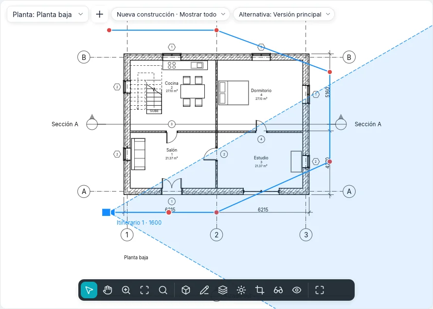
Sol y sombras
Las plantas, secciones, alzados y vistas 3D muestran el sol (las vistas de dibujo, leyendas, planos y tablas no). La barra de control de la vista tiene dos botones, cada uno con una flecha pequeña para su menú (el botón derecho también lo abre):
- Trayectoria solar: su menú tiene Mostrar trayectoria solar / Ocultar trayectoria solar, Configuración del sol… y Ajustar al modelo (encuadra toda la trayectoria);
- Sombras: su menú tiene Activar sombras / Desactivar sombras, Opciones de visualización gráfica… y Vista previa del estudio solar.
Mientras uno de los dos está activo, la barra muestra también la hora y la fecha del sol, cada una con − y + (un cuarto de hora, un día). Los mismos botones y menús están en el menú Sol y sombras de la barra de la vista del estilo BIMopen, en la hoja de la vista del modo táctil y en el menú contextual de la vista. Trayectoria solar es también una casilla de las Propiedades de la vista (Gráficos), con Tamaño de la trayectoria (100–500 %, 150 % por defecto) y Sol compartido.
Las sombras se calculan a partir del modelo y del sol, iguales en todas las vistas: en planta caen sobre lo que la planta muestra y, donde no hay nada, sobre el plano de un nivel (Sombras en el nivel en la configuración del sol; si no, sobre el terreno, el nivel más bajo); en secciones y alzados caen sobre las fachadas y sobre lo que está detrás, desde aleros, balcones, entrantes y otros edificios, y lo mismo en las vistas 3D. En Líneas (líneas ocultas) una sombra es un gris del papel; en los estilos sombreados oscurece los colores de los materiales. Las caras cortadas por la vista quedan a la luz.
La trayectoria solar es un anillo alrededor del modelo con los puntos cardinales al norte real, el arco del día con sus horas, el analema (dónde está el sol a esa hora a lo largo del año: un ocho continuo, cada día a la hora de reloj de la fecha elegida), el tramo que recorre un estudio, y el sol con su hora y su fecha; en una vista 3D es una cúpula sobre el anillo. En plantas, secciones, alzados y vistas 3D el sol se arrastra: a lo largo del día se ajusta a los cuartos de hora, a lo largo del año sigue el analema día a día (con el cambio de hora el reloj se desplaza el cambio, así el sol no salta); Shift mientras arrastras toma el otro, y A lo largo del día / A lo largo del año en el menú de la trayectoria eligen cuál va primero. Las sombras siguen el arrastre: en planta, en sección y en alzado, mientras el sol se mueve, son un borrador más tosco, cada vista muestra sus últimas sombras hasta que las nuevas están listas, y se dibujan completas cuando se suelta el sol. Con la vista bajo el cursor (y nada seleccionado, o tras un clic en el sol), Left y Right mueven la hora, Up y Down la fecha. Con Iluminación el sol está quieto y no tiene trayectoria.
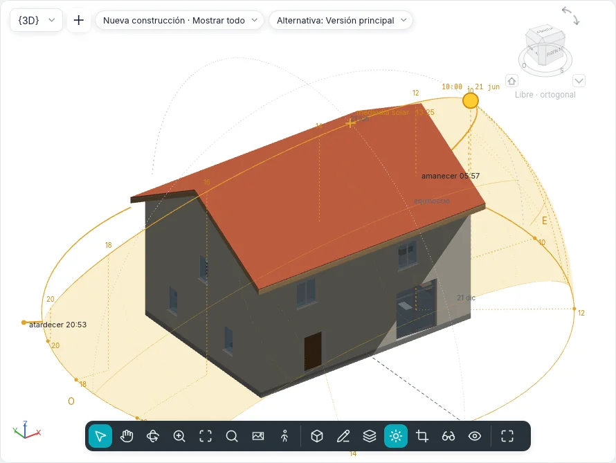
El menú de la trayectoria (en la barra de la vista, en el menú de la vista y en modo táctil) tiene también Ayudas visuales para leerla: Líneas verticales de las horas (de cada hora par una línea discontinua baja al suelo y va al anillo, con la hora allí; en planta un punto en el anillo), Proyección del arco en el suelo, Mediodía solar (el punto más alto del arco con su hora de reloj, y la línea norte–sur), Franja del año (el cielo que el sol cruza en el año, en amarillo claro, los arcos de los solsticios y del equinoccio, los analemas de las horas pares), Amanecer y atardecer (marcas en el anillo con sus horas; la barra de la vista las muestra con la duración del día) y Analema; todas salvo la proyección están activas al principio. En una vista 3D lo que queda detrás del modelo queda oculto por él. La Configuración del sol muestra también los amaneceres y atardeceres del año en un gráfico: un clic o un arrastre sobre él elige el día.
Sol compartido: las vistas comparten el sol del proyecto salvo que tengan uno propio (la propiedad Sol compartido). Mover el sol compartido en una vista lo mueve en todas las vistas que lo comparten; una vista con su propio sol no cambia. Un sol común a todas las vistas en la configuración del sol devuelve todas las vistas a él.
Cada cambio es un paso de Deshacer; el comando sun hace lo mismo en la línea de comandos y
por MCP (véase Línea de comandos y MCP).
Configuración del sol
Configuración del sol… abre un cuadro de diálogo con el acimut, la altitud, la hora y la fecha del sol en su cabecera:
- a la izquierda los preajustes: una fila sin guardar por cada modo, los incluidos (Solsticio de verano, Solsticio de invierno, Equinoccio de primavera, Equinoccio de otoño, Verano, de 9 a 17, Luz desde arriba a la derecha) y los del proyecto; Guardar…, Duplicar…, Cambiar nombre… y Eliminar (solo los preajustes del proyecto se renombran o se eliminan);
- en el centro el modo y sus campos:
| Modo | Qué pide |
|---|---|
| Instante | la Fecha y la Hora; Un sol común a todas las vistas |
| Un día | la Fecha, Del amanecer al atardecer o una Hora de inicio y una Hora de fin, el Intervalo entre fotogramas (15, 30 o 45 minutos, 1 hora); de ahí el número de Fotogramas |
| Varios días | Desde el día y Hasta el día (día/mes), la Hora, el Intervalo (1 hora, 1 día, 1 semana, 1 mes) |
| Iluminación | Acimut (°) y Altitud (°); Relativa a la vista: la luz sigue la dirección de la vista |
Después la Ubicación del proyecto (una ciudad, o Personalizada con su latitud y longitud: una sola para todo el proyecto; una ubicación personalizada toma el huso horario de la ciudad más cercana; un proyecto nuevo empieza en Roma, la casa de ejemplo está en Cagliari) con el Horario de verano, que es automático: la regla del lugar (Europa, América del Norte, Chile, Australia sudoriental, Nueva Zelanda, Egipto, o ninguna) y el domingo exacto del Año del sol, así las horas de la trayectoria y de los estudios son las del reloj; la regla se puede cambiar. Después Sombras en el nivel con su Nivel del terreno; - a la derecha la vista previa: el cielo visto desde arriba, con la trayectoria del día, el analema y el sol. Vista preliminar en la cabecera, a la derecha de los valores, es un interruptor que la oculta y la muestra; el cuadro de diálogo conserva su tamaño y, sin vista previa, la configuración ocupa su espacio.
Aplicar cambia el sol de la vista y deja abierto el cuadro de diálogo, Aceptar lo cambia y lo cierra, Cancelar no cambia nada. Los proyectos hechos antes de que el proyecto tuviera ubicación conservan el lugar y la fecha de cada vista: la primera vista cuyo sol se había cambiado da al proyecto su ubicación, y las vistas cuyo sol se había cambiado conservan el suyo como propio.
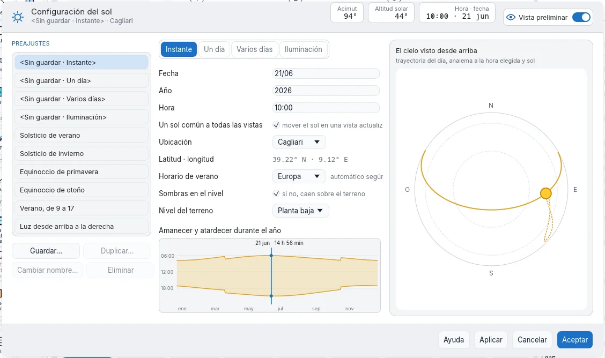
Estudio solar
Vista previa del estudio solar (en el menú Sombras) muestra sobre la vista la barra del estudio: ⏮ −10, ⏴, ⏵ Reproducir / ⏸ Pausa, ⏵, +10 ⏭ y fotograma n de N. Un sol de un instante se estudia a lo largo de su día. Guardar como imagen guarda el fotograma mostrado como PNG con el nombre de la vista, la fecha y la hora; Exportar estudio… guarda todos los fotogramas como secuencia de imágenes PNG o JPEG (un vídeo requiere un codificador que BIMopen no tiene: la opción aparece en gris, con el motivo). × cierra la barra; otra vista también la cierra.
Opciones de visualización gráfica
Opciones de visualización gráfica… fija las opciones gráficas de la vista activa, en grupos que se abren y se cierran con un clic en su título (la ventana recuerda cuáles están abiertos, y mantiene su tamaño y su posición):
- Visualización del modelo: el Estilo gráfico; Mostrar aristas (las aristas sobre las caras en los estilos Sombreado, Colores uniformes y Realista; marcada y gris en los estilos que las dibujan siempre); Líneas suavizadas con antialiasing (líneas y aristas de la vista 3D suavizadas; sin ello, más nítidas y rápidas de dibujar; plantas, secciones y alzados tienen siempre líneas suavizadas); Transparencia (0–100: todas las caras de la vista se vuelven transparentes y se ve lo que hay detrás, en el estilo Línea oculta también las aristas ocultas; se aplica a las vistas 3D en los estilos con caras, a Realista en una fase siguiente); los Bordes de silueta (Ninguno, Medio, Grueso: una línea más gruesa en el contorno exterior del modelo).
- Sombras: Proyectar sombras y Mostrar sombras ambientales (esquinas y huecos oscurecidos).
- Líneas de boceto: véase Líneas de boceto.
- Indicación de profundidad (secciones y alzados): con Mostrar profundidad lo que está más lejos de la línea de la vista se desvanece hacia el fondo. Inicio del desvanecimiento y Fin del desvanecimiento (en porcentaje de la profundidad de la vista) dicen dónde empieza y dónde termina; Límite de desvanecimiento, cuánto queda visible de lo más lejano (0: desaparece, 100: no se desvanece). Se desvanecen líneas, caras, patrones y líneas de boceto, en pantalla como en la impresión y la exportación, sobre fondo claro y oscuro; las anotaciones y las partes cortadas quedan como están.
- Iluminación: el Esquema (por ahora siempre Exterior: sol), la Configuración del sol (el botón la abre), Luces artificiales… (gris: llegarán en una fase siguiente), Sol, Luz ambiental e Intensidad de las sombras (0–100).
- Realista: los ajustes del estilo Realista (véase Estilo Realista).
- Pastel: los ajustes del estilo Pastel (véase Estilo Pastel).
- Fondo (vistas 3D): Ninguno, Cielo, Degradado, Cielo físico (hora y lugar); con Degradado, Color del cielo, Color del horizonte y Color del terreno, de arriba abajo. Imagen está en gris: llegará en una fase siguiente.
Abajo, Guardar como plantilla de vista… aplica las opciones a la vista y pide el nombre de
una nueva plantilla de vista que las lleve. Cada ajuste numérico tiene su control deslizante y un
campo para escribir el valor. La vista previa dibuja la vista con las opciones elegidas; el
interruptor Vista preliminar de la cabecera la oculta y la muestra, como en la configuración
del sol. En el estilo Realista la vista previa se ve como la vista.
Las plantillas de vista llevan estas opciones con el estilo gráfico, y el sol y las sombras como
Sol y sombras. En la línea de comandos: graphicoptions {"edges":true,"transparency":30,"depth":true,"depth_limit":20,"background":"sfumatura","sky_color":"189-209-208"}.
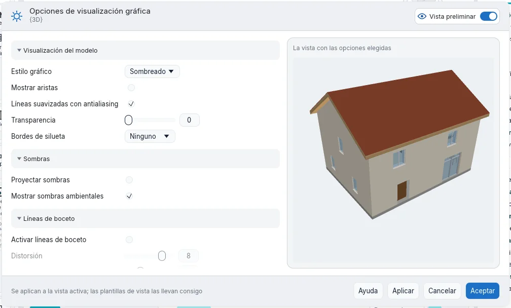
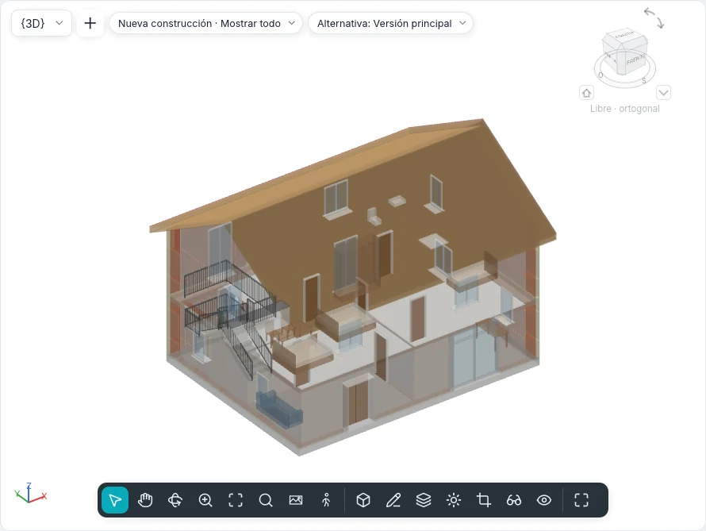
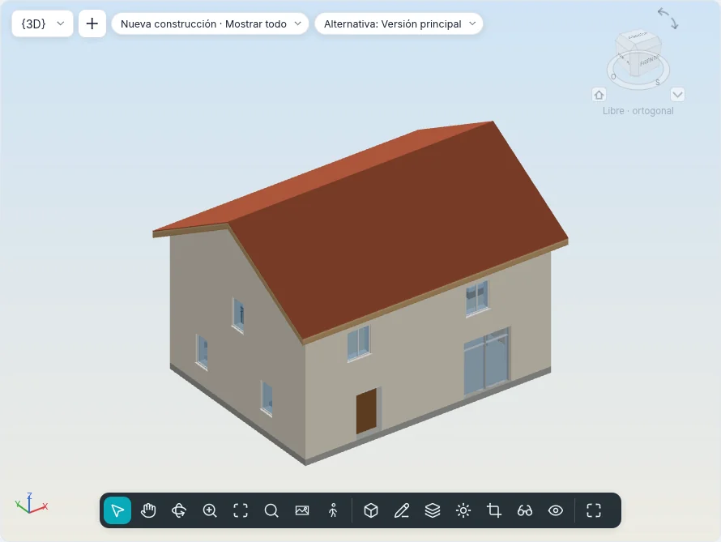
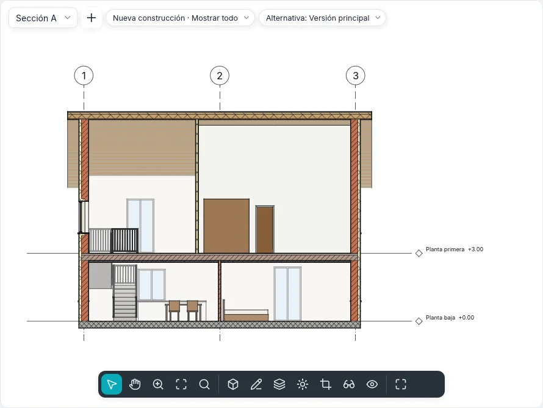
Líneas de boceto
El grupo Líneas de boceto de Opciones de visualización gráfica… dibuja las líneas de la vista como a mano. Activar líneas de boceto las enciende para la vista activa; Distorsión (0–10) fija cuánto ondula cada línea y cuántas veces se repasa (0 recta, dos veces desde 4, tres veces desde 8); las líneas largas ondulan más que las cortas. Extensión (0–10) fija cuánto sobrepasan las líneas sus extremos, más allá de las esquinas donde se encuentran (0 las detiene allí). Empiezan en 5 y 1 en plantas, secciones, alzados y vistas 2D, en 8 y 3 en las vistas 3D. El botón ✎ de la barra de la vista (en cada estilo de la interfaz; en modo táctil, en el panel de la vista) las enciende y las apaga para la vista activa: Activar líneas de boceto / Desactivar líneas de boceto.
Valen en todas las vistas (plantas, secciones, alzados, vistas de dibujo, vistas 3D, vistas en los
planos) y en todos los estilos gráficos: para las líneas del modelo, de los componentes de detalle
y de los patrones de relleno. Las anotaciones siguen rectas: cotas, textos, niveles, rejillas,
planos de referencia, etiquetas, símbolos y marcas de vista. Una vista dibuja las mismas líneas en
cada redibujado y tras una órbita que vuelve, y se imprime y se exporta exactamente como la muestra
la ventana: PDF y SVG mantienen las líneas vectoriales, una sección o un alzado impresos solo dejan
fuera las partes que ocultan superficies más cercanas. La selección y el forzado de cursor siguen
usando las líneas rectas. Las plantillas de vista llevan el ajuste con las demás opciones de
visualización gráfica. En la línea de comandos:
graphicoptions {"sketchy":true,"distortion":5,"extension":1}.
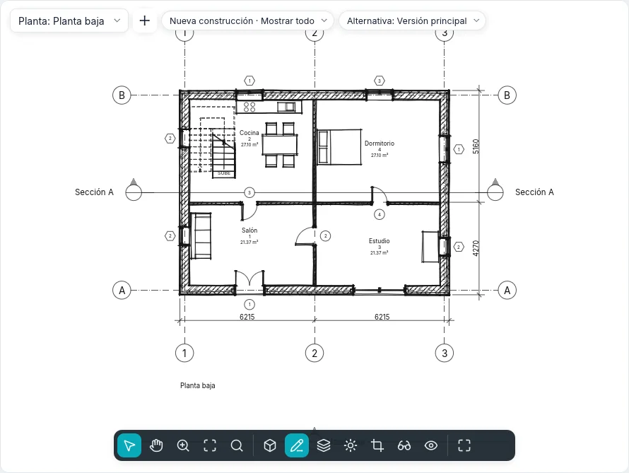
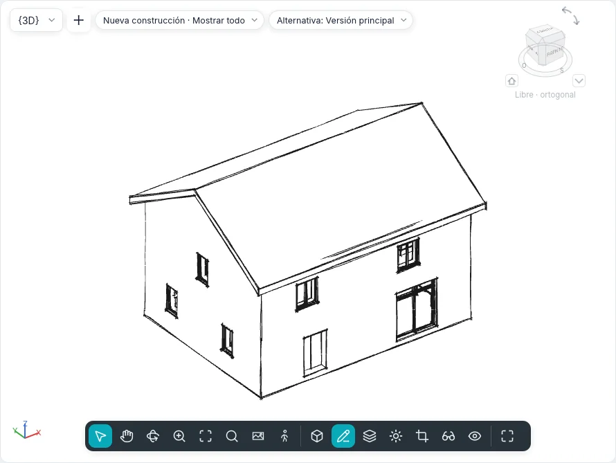
Plantas y sus alturas de corte
Vistas ▸ Crear ▸ Planta ▸ Plano de planta abre Nueva planta: elige los niveles y la escala, y después Aceptar. Con No duplicar vistas existentes activado, se omiten los niveles que ya tienen una planta; desactívalo para crear una segunda planta de un nivel.
Una planta es un corte horizontal del modelo en el Plano de corte de sus alturas de corte. Los muros que cruzan el plano de corte se dibujan cortados, con los patrones de corte de los materiales de sus capas con Detalle Medio y Alto; los muros más bajos y los suelos del nivel se ven desde arriba.
Para cambiar las alturas de corte, no selecciones nada (de modo que Propiedades muestre la vista) y después Alturas de corte ▸ Editar…. Cada plano se mide desde un nivel, con un desfase:
| Plano | Nivel |
|---|---|
| Superior | El nivel propio de la planta (Nivel asociado), el Nivel de arriba, un nivel por su nombre o Ilimitado |
| Plano de corte | Siempre el nivel propio de la planta |
| Inferior | El nivel propio de la planta, el Nivel de abajo o un nivel por su nombre |
| Profundidad de vista | Como Inferior, o Ilimitado |
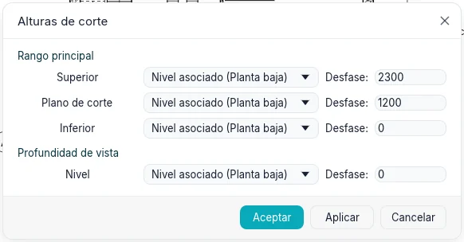
Aceptar define los cuatro planos a la vez, como un único cambio. Deben mantener el orden, de arriba abajo (superior, plano de corte, inferior, profundidad de vista): si no, la ventana explica qué falla y permanece abierta. Los suelos por debajo del plano inferior, hasta la profundidad de vista, se dibujan más allá con líneas finas; también los suelos algo por debajo del plano inferior, como una losa hundida, aunque la profundidad de vista coincida con el plano inferior.
Capa subyacente
Un plano puede mostrar debajo otro rango del modelo, más claro: la planta de abajo para calcar, o la de arriba para alinearse. En Propiedades (nada seleccionado), grupo Subyacente:
- Rango: nivel base la activa: elija un nivel (Ninguno la desactiva). Rango: nivel superior se rellena con el nivel encima de la base; elija otro nivel más arriba, o Ilimitado, para mostrar más modelo.
- Orientación de subyacente: Hacia abajo la muestra desde arriba, como un plano; Hacia arriba desde abajo, como un plano de techo.
De la capa subyacente se dibujan solo las líneas, bajo el plano, y lo que la vista oculta sigue oculto. Con Seleccionar elementos subyacentes activado (en la barra de estado), un clic o una ventana los selecciona también, y se modifican desde aquí; desactivado, el clic los atraviesa. Proyecto ▸ Parámetros adicionales ▸ Medio tono/Subyacente fija, para todo el proyecto, el Grosor y el Patrón de la capa, Aplicar medio tono y el Brillo de todo medio tono (también de Mostrar modelo ▸ Medio tono).
Otras propiedades de las vistas:
- Orientación: Norte real gira un plano en pantalla para que el norte real del proyecto quede arriba; se dibuja y se modifica como siempre.
- Escala de vista ▸ Personalizada permite escribir el Valor de escala 1:.
- Recorte de profundidad (planos) y Delimitación lejana (secciones y alzados): Sin recorte, Recortar sin línea, Recortar con línea; Desfase de delimitación lejana escribe la profundidad de una sección.
- Plantilla de vista: una plantilla asignada a la vista; mientras lo esté, las propiedades que incluye la siguen y se ajustan en la plantilla.
- Mostrar en (secciones): Vistas que intersecan muestra la sección en cada plano, Solo vista principal solo en los planos del nivel donde se dibujó.
- Nivel asociado y Dependencia son de solo lectura.
Fondo claro y oscuro
Opciones ▸ Tema ▸ Oscuro (o Invertir color de fondo) oscurece el área de dibujo. El fondo cambia una sola cosa: las líneas negras (aristas, textos, patrones) se dibujan claras, para que sigan legibles (el texto sobre los colores de los locales sigue oscuro, como sobre fondo claro); solo en los estilos de líneas (Estructura alámbrica y Líneas) el papel y las líneas negras se invierten juntos, en planta, en sección, en alzado y en 3D. En los estilos que muestran los colores del modelo (Sombreado, Colores planos, Realista, Pastel) caras, materiales, rellenos, aguadas, sombras, poché, transparencia y profundidad son idénticos sobre cualquier fondo, y Pastel dibuja siempre sobre su papel claro. Opciones ▸ Tamaño de la interfaz agranda toda la interfaz, del 100 % al 250 %, además de la escala de la propia pantalla: útil en pantallas con muchos píxeles. Se conserva para el próximo inicio.
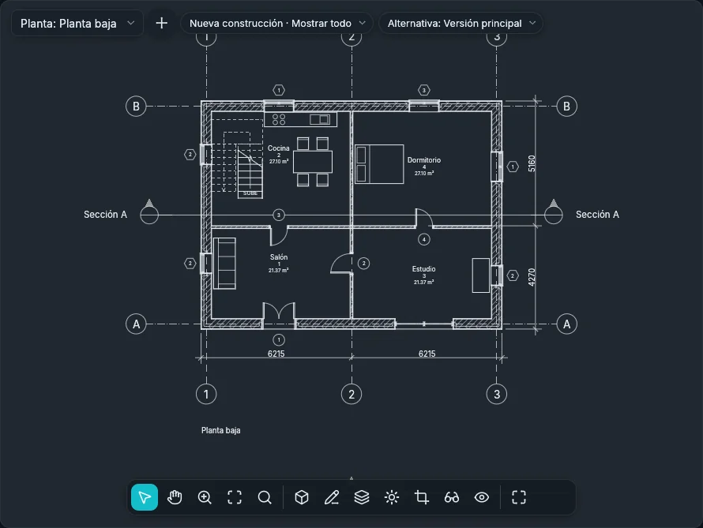
Abrir una vista desde su símbolo
Haga doble clic en el símbolo de una vista para abrirla: una línea de sección o su cabeza, un símbolo de alzado, el contorno de un detalle (una llamada de referencia abre la vista a la que apunta), la línea de un nivel en una sección o un alzado (se abre su planta), o una vista colocada en un plano. La ventana de la vista pasa a ser la activa.
Vistas ▸ Crear ▸ Alzado ▾ ▸ Alzado de estructura crea un alzado de una rejilla: haga clic junto a la rejilla, en el lado desde el que mirarla (antes del clic, una línea y una flecha muestran la vista). El alzado mira la rejilla más cercana, tan ancho como el vano entre las rejillas que la cruzan y tan profundo como la siguiente rejilla paralela.
Las cabezas de sección, los símbolos de alzado y las llamadas muestran el número de detalle de la vista sobre el número del plano en el que está colocada; sus círculos quedan vacíos mientras la vista no está en ningún plano. Un proyecto nuevo ya trae cuatro alzados, Norte, Sur, Este y Oeste, que miran hacia la zona alrededor del origen: muévalos adonde está el edificio.
Escala, detalle y región de recorte
La barra de controles de vista muestra la Escala de vista y el Detalle de la vista (también en las vistas 3D).
- A una escala menor, el modelo se dibuja más pequeño en el papel, mientras que los textos, las etiquetas y los símbolos conservan su tamaño en el papel: a 1:200 un texto abarca el doble del modelo que a 1:100.
- En Bajo, un muro cortado es un único relleno; en Medio y Alto se ven sus capas, cada una con su material.
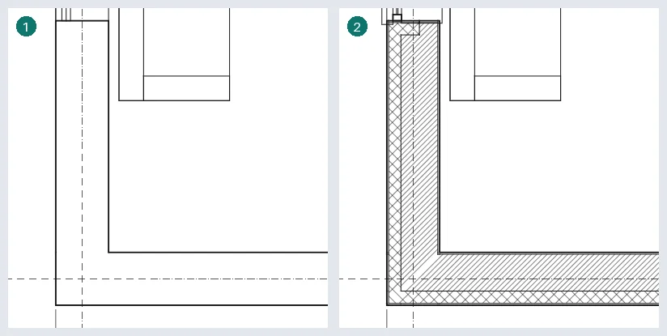
Las secciones cortan el modelo del mismo modo. Muros, suelos y cubiertas que se encuentran en el corte se dibujan como uno solo: un contorno grueso alrededor, una línea fina solo donde se encuentran dos materiales, ninguna entre partes del mismo material; los muros enlazados a una cubierta se detienen bajo ella. Cada capa cortada tiene el patrón de corte de su material (en Bajo, el Patrón de relleno de escala baja del tipo en su Color de relleno de escala baja, que se definen en los tipos de muro, suelo y cubierta; si no, un único relleno sólido). El mobiliario y los aparatos sanitarios nunca se cortan: se ven enteros. Una ventana se corta con su marco en la línea gruesa de corte y su vidrio en líneas finas; lo que queda más allá del corte se dibuja con las líneas de proyección, más finas. Más allá del corte, y en los alzados, una cara delante oculta lo que está detrás, y el vidrio de una ventana es opaco: cada ventana muestra su marco y su vidrio, no las habitaciones de detrás.
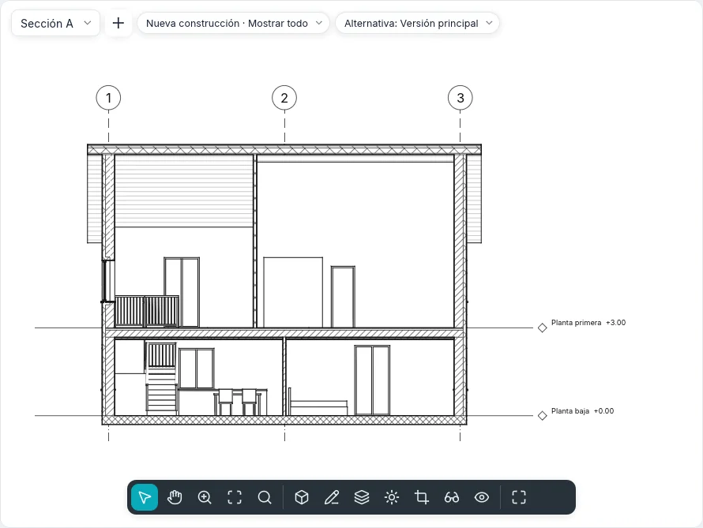
Recortar vista recorta la vista a su región de recorte, y Mostrar región de recorte dibuja la región; arrastra sus bordes para cambiar su tamaño. Para escribir su tamaño: Propiedades ▸ Tamaño de recorte ▸ Editar…, y después Anchura y Altura; la región conserva su centro.
Ocultar y aislar
Aislar temporalmente (las gafas de la barra de controles de vista) actúa sobre los elementos seleccionados, solo en la vista activa, y no cambia el proyecto:
| Comando | Atajo | Qué permanece visible |
|---|---|---|
| Aislar elemento | HI |
Solo los elementos seleccionados |
| Ocultar elemento | HH |
Todo menos los elementos seleccionados |
| Aislar categoría | IC |
Solo las categorías de los elementos seleccionados |
| Ocultar categoría | HC |
Todo menos esas categorías |
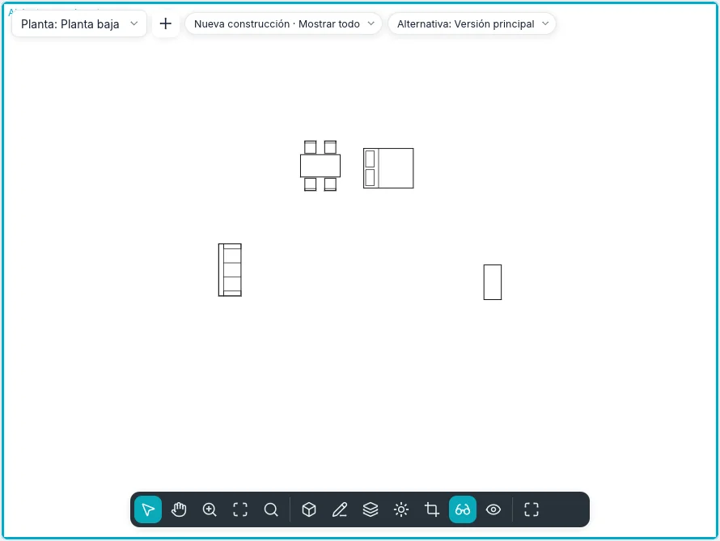
La vista recibe un borde de color. Cada uso reduce lo que se muestra: ocultar un elemento y
después otro oculta ambos. Restablecer Aislar temporalmente (HR) vuelve a mostrar
todo; Aplicar Ocultar/Aislar a vista oculta de forma permanente lo que estaba oculto por ahora.
Para ocultar de forma permanente en la vista, selecciona los elementos y después clic derecho ▸
Ocultar en vista ▸ Elementos o Categoría, o bien Vistas ▸ Ocultar en vista de la tarjeta
contextual, o escribe EH (elementos) o VH (categoría).
Revelar ocultos (la bombilla de la barra de controles de vista, o RH) enmarca la
vista en magenta y muestra lo oculto en magenta y el resto en medio tono. Un elemento oculto
puede entonces seleccionarse y volver a mostrarse: clic derecho ▸ Mostrar en vista ▸
Elementos (o Categoría). Haz clic de nuevo en la bombilla, o escribe RH, para salir.
Visibilidad y gráficos
Vistas ▸ Gráficos ▸ Visibilidad y gráficos (o VG, o Propiedades ▸ Modificaciones de
visibilidad y gráficos ▸ Editar…) muestra, para la vista activa, una fila por categoría:
- la casilla muestra u oculta la categoría; Mostrar categorías de modelo en esta vista las muestra u oculta todas;
- Líneas de proyección y Líneas de corte: Modificar… define el grosor, el color y el patrón;
- Patrones de superficie y Patrones de corte: los patrones del material, ocultos, en otro color o sustituidos por otro patrón de relleno;
- Medio tono mezcla las líneas con el fondo;
- Transparente hace las superficies semitransparentes en la vista 3D;
- Detalle dibuja la categoría en un nivel distinto al de la vista.
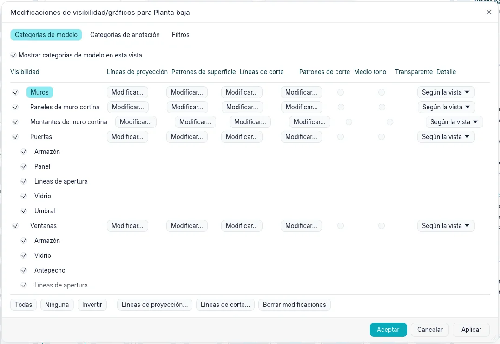
Borrar modificaciones devuelve las filas seleccionadas a los estilos por categoría. Los cambios se ven al instante: Aplicar los conserva y mantiene la ventana, Cancelar (o la × de la ventana) deshace lo que no se aplicó, Aceptar los conserva y cierra.
Un elemento puede tener sus propios gráficos en una vista: selecciónalo y después clic derecho ▸ Gráficos personalizados ▸ Por elemento… (o el grupo Vista de la tarjeta contextual). Gráficos de elementos específicos de vista tiene Visible, Medio tono, Transparente, los patrones de superficie y de corte y las líneas de proyección y de corte. Solo se aplican en esta vista, por encima de los de la categoría y los de los filtros.
Filtros
Vistas ▸ Gráficos ▸ Filtros enumera los filtros del proyecto: Nuevo, Duplicar, Cambiar nombre, Eliminar. Un filtro tiene categorías y hasta cuatro reglas sobre sus parámetros, que un elemento debe cumplir todas.
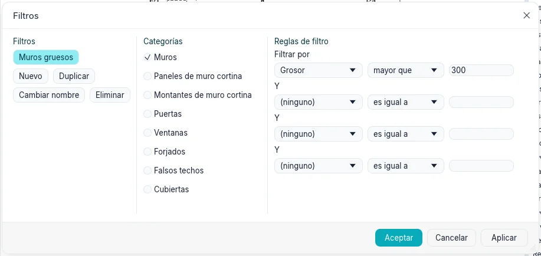
En Visibilidad y gráficos ▸ Filtros, Añadir aplica un filtro a la vista; su fila define entonces la visibilidad, las líneas, Medio tono y Transparente de los elementos que lo cumplen. Cuando los filtros discrepan, gana el que está más arriba en la lista: Arriba y Abajo mueven el filtro seleccionado.
Plantillas de vista
Vistas ▸ Gráficos ▸ Plantillas de vista ▸ Crear plantilla a partir de la vista actual guarda con un nombre, como plantilla, la escala, el detalle, el estilo gráfico, las alturas de corte y los gráficos de la vista. Plantillas de vista ▸ Aplicar plantilla a la vista actual los da a otra vista del mismo tipo: una planta (también una segunda planta de un nivel), una sección o un alzado, o una vista 3D. Una vista no sigue los cambios posteriores de su plantilla hasta que se vuelve a aplicar, y los gráficos de elementos sueltos nunca forman parte de una plantilla.
Un proyecto nuevo empieza con dos plantillas, Arquitectura - Planta y Arquitectura - Sección y alzado, aplicadas a cada vista nueva de su tipo: plantas, plantas de techos, secciones y alzados se dibujan solo con líneas, con los patrones de corte de los materiales en lo que se corta y sus patrones de superficie en lo que se ve, sin rellenos de color y sin sombras. Llevan el estilo gráfico y el sol, así que una vista nueva conserva la escala, el nivel de detalle y el rango de vista con los que se crea; al cambiarlas cambia el aspecto de las vistas nuevas. Los planos de áreas conservan su esquema de color.
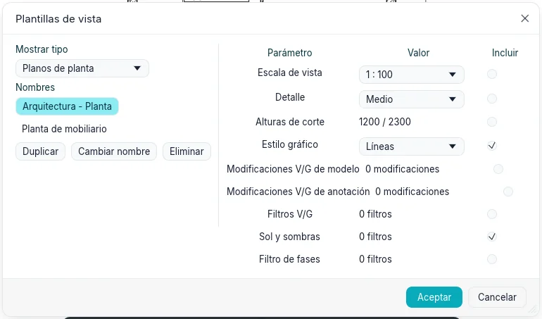
Gestión de vistas
Haz clic derecho en una vista del Índice del proyecto:
- Duplicar vista ▸ Duplicar copia la vista con sus propiedades; Duplicar con detalles copia también sus cotas, textos, etiquetas y detalles 2D. La copia se abre;
- Cambiar nombre… pide el nuevo nombre (Cambiar nombre de vista); los nombres siguen siendo únicos entre las vistas.
Vistas ▸ Ventanas ▸ Mosaico muestra todas las vistas abiertas una junto a otra, llenando el área de dibujo: con tres ventanas, la activa a la izquierda a toda la altura y dos apiladas a la derecha.
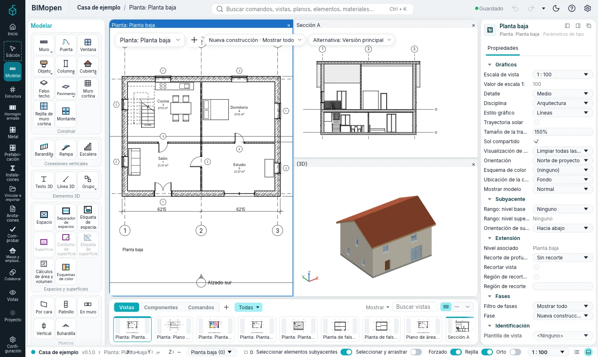